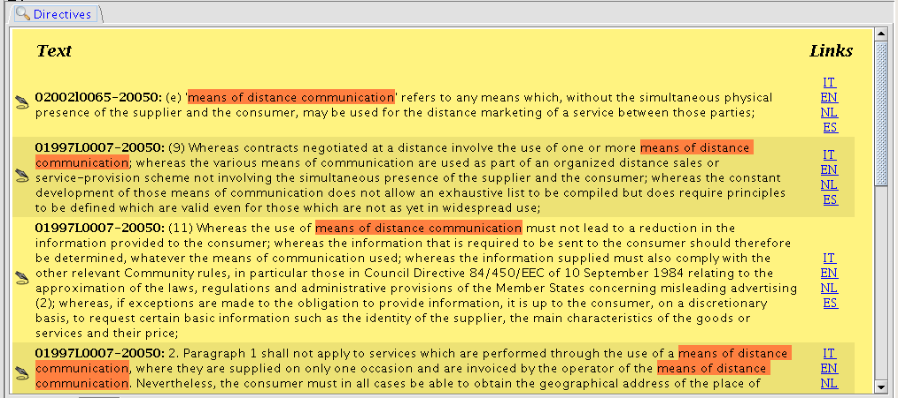
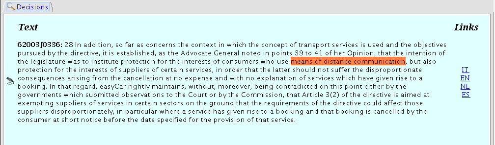

Sources
Panels
The Sources Panels
(Directives
Panel & Decisions
Panel) show the contexts in the domain corpus of
directives and decisions where the selected term
is mentioned
or defined
,
in the selected local
language


Hyperlinks to document partitions in the other DALOS languages are accessible from the panels and visualized in a Web Browser